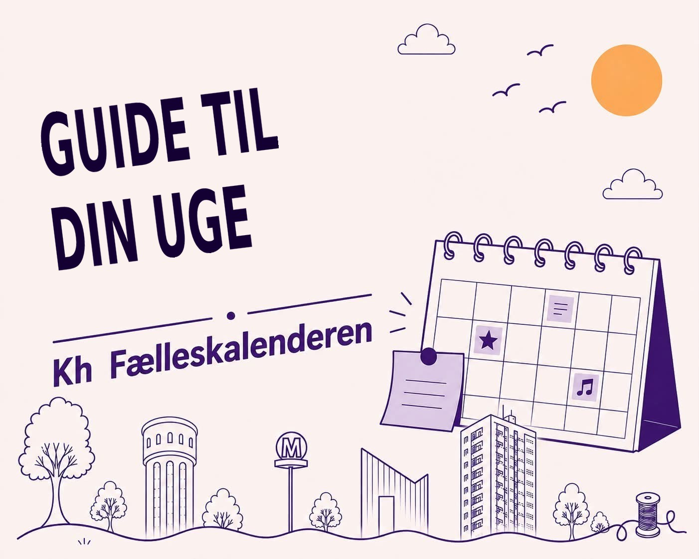

Hvad skal du i ugen?
Mandag 2. november
Strikkecafé i Bellahøj Kirke
Bellahøj Kirke · Kl. 13.00–15.00 · Gratis
Strik med over en kop kaffe og god snak – alle er velkomne.
Læs mere
Udstilling: Brønshøjgruppen – sidste dage
BRØK, Brønshøj Kulturhus (caféen og 2. sal) · Kl. 15.00–21.30, til og med onsdag · Gratis
Tre lokale kunstnere – Arne Simonsen, Ida Theodora Wolf Berendsen og Mogens Elgaard – viser landskabsmaleri, grafik og foto. Udstillingen slutter onsdag.
Læs mere
Forfatterspirernes Skriveklub (11–18 år)
Husum Bibliotek · Kl. 16.30–18.30 · Gratis
Skriveklub for skriveglade unge. Man må gerne møde op og prøve en enkelt gang.
Læs mere
Skriveworkshop: Narrativ nonfiktion
Brønshøj Bibliotek · Kl. 16.30–18.30 · Gratis, tilmelding
Lær at skrive virkelighedens historier, så de bliver levende og spændende – med journalist og forfatter Mette Mayli Albæk.
Læs mere
Dansk snakkeklub
Caféen, Tingbjerg Bibliotek & Kulturhus · Kl. 16.30–18.00
Øv dit danske i uformelt selskab.
Se kalenderen
Åbent hus i BRØKs Tekstilværksted
BRØK, Brønshøj Kulturhus · Kl. 17.00–18.00 · Gratis
Kig indenfor i tekstilværkstedet under taget, se faciliteterne og hør, hvordan du kan blive en del af fællesskabet. Man behøver ikke være øvet ved symaskinen.
Læs mere
Bakteriers hemmelige kommunikation
Salen, Tingbjerg Bibliotek & Kulturhus · Kl. 19.00–20.30 · Gratis, tilmelding
Forsker og forfatter Fatima AlZahra'a Alatraktchi kan høre bakterier hviske til hinanden. Hun fortæller om deres sociale liv – og hvorfor så små væsner kan slå os ihjel.
Læs mere
BRØK Impro Comedy
Plenum, BRØK, Brønshøj Kulturhus · Kl. 19.00–21.30 · 60 kr.
Improgrupperne Dagens Kontor og Zip Zap Zuppen spiller hver deres show med levende klaver. Intet er planlagt på forhånd.
Læs mere
Tirsdag 3. november
BioGIRAFFEN – tumlingebio (1–3 år)
Rytterskolen · Kl. 08.45–09.05 · Gratis, billet
Ca. 20 minutters korte film for de mindste – og lidt sundt knas bagefter. Dagplejere og institutioner er også velkomne.
Læs mere
Cykeltur med cykelfællesskabet
BRØK, Brønshøj Kulturhus · Kl. 10.00–12.00 · Gratis
Cykelfællesskabet for seniorer tager på tur sammen fra BRØK – hver tirsdag og torsdag.
Læs mere
MiniBiblioteket (0–6 år)
Børnebiblioteket, Tingbjerg Bibliotek & Kulturhus · Kl. 10.00–10.30
En lille stund i børnebiblioteket for de mindste og deres voksne.
Se kalenderen
Rytmik i Rytterskolen (4–18 mdr.)
Rytterskolen · Kl. 10.30 og 11.30 · 70 kr. for en voksen med barn, billet på forhånd
Sang, dans og leg for de helt små med rytmikpædagog Pia Jønsson.
Læs mere
70'er salon: Et åbent øjeblik
Brønshøj Sognehus · Kl. 14.00
Gasolin, trompetbukser og hønsestrik – men også oliekrise og bilfrie søndage. Erindringsfabrikken inviterer til en eftermiddag om 70'erne.
Læs mere
Igne:Oya – sy- og håndarbejdsværksted
Salen, Tingbjerg Bibliotek & Kulturhus · Kl. 16.00–19.00
Kom og sy og lav håndarbejde sammen med andre.
Se kalenderen
Bistro og Bibelhistorie
Brønshøj Kirke og Sognehus · Kl. 17.00 · Børn spiser gratis, voksne 50 kr.
Børnegudstjeneste med en bibelhistorie og salmer – bagefter spiser vi sammen i Sognehuset.
Læs mere
Lektiehjælp og studiecafé
Mødelokale 2, Tingbjerg Bibliotek & Kulturhus · Kl. 17.00–19.00
Få hjælp til lektierne eller ro til at læse.
Se kalenderen
Tysk snakkeklub
BRØK, Brønshøj Kulturhus · Kl. 18.00–19.15 · Gratis
Øv dit tysk i uformelt selskab – alle niveauer er velkomne.
Læs mere
Kaffe – foredrag fra Aarhus Universitet
Brønshøj Bibliotek · Kl. 19.00–21.00 · Gratis, ingen tilmelding
Tre forskere fortæller om kaffe – fra plante og dyrkning over klima og bæredygtighed til kaffe og sundhed. Livestreamet fra Aarhus Universitet.
Læs mere
Strikkecafé med Brønshøj Strikkeklub
BRØK, Brønshøj Kulturhus · Kl. 19.00–21.00 · Gratis
Åben strikkeklub for både begyndere og øvede – kom bare forbi.
Læs mere
Fransk snakkeklub
BRØK, Brønshøj Kulturhus · Kl. 19.15–20.15 · Gratis
Øv dit franske i uformelt selskab – alle niveauer er velkomne.
Læs mere
Onsdag 4. november
Morgensang
Brønshøj Bibliotek · Kl. 09.00–09.20 · Gratis
Start dagen med fire sange fra Højskolesangbogen med sangvært og pianist.
Læs mere
Åbent værksted
Skaberværelset, Tingbjerg Bibliotek & Kulturhus · Kl. 15.00–19.00 · Gratis
Prøv 3D-printer, laserskærer og vinylcutter, eller tag dit eget projekt med og få sparring.
Læs mere
Kirkebio: Dag efter Dag
Tingbjerg Kirke · Kl. 17.00 · Fri entré
Fem personer kører gennem Europa i autocamper for at opfylde en ældre mands sidste ønske (Felix Herngren, 2022). Gratis popcorn og snak om filmen bagefter.
Se kalenderen
Paradise Jazz: Toftemark International Quintet feat. Noah Halpern
BRØK, Brønshøj Kulturhus · Kl. 20.00–22.00 · 175 kr.
Saxofonist Andreas Toftemark samler unge jazzmusikere fra fire lande – bl.a. den amerikanske trompetist Noah Halpern, der har spillet med Wynton Marsalis.
Læs mere
Torsdag 5. november
KirkeYoga i Bellahøj Kirke
Bellahøj Kirke · Kl. 08.30 og 10.00 · Tilmelding
Yoga og nærvær i kirkerummet.
Læs mere
Cykeltur med cykelfællesskabet
BRØK, Brønshøj Kulturhus · Kl. 10.00–12.00 · Gratis
Cykelfællesskabet for seniorer tager på tur sammen fra BRØK.
Læs mere
MiniBiblioteket (0–6 år)
Børnebiblioteket, Tingbjerg Bibliotek & Kulturhus · Kl. 10.00–10.30
En lille stund i børnebiblioteket for de mindste og deres voksne.
Se kalenderen
Mad til alle
Tingbjerg Kirke · Kl. 11.00 (morgensang kl. 10.40) · Gratis
Hjemmelavet mad af overskudsvarer – kom og spis med.
Læs mere
Babycafé
Eilersminde, Ruten 14, 4. sal · Kl. 11.00–13.00 · Gratis
For forældre med børn på 0–1 år. Ugens tema: opdragelse og konflikter.
Se kalenderen
Foredrag om Titanic – del 2
Husum Kirke · Kl. 14.00–16.00 · Ingen tilmelding
Anders Henriksen fortsætter fortællingen om Titanic. Du kan sagtens være med, selvom du ikke var til del 1. Kaffe og kage i pausen.
Læs mere
Leg og boldspil (6–12 år)
Salen, Tingbjerg Bibliotek & Kulturhus · Kl. 15.30–16.30
Leg og boldspil for børn.
Se kalenderen
Læseforeningen – højtlæsning for voksne
Brønshøj Bibliotek · Kl. 16.30–18.00 · Gratis, ingen tilmelding
Vi læser noveller, romaner og digte højt og snakker om dem. Kaffe og te på kanden.
Læs mere
FOLK & MAD – fællesspisning i Husum
EnergiCenter Voldparken · Kl. 17.30–19.30 · 38 kr.
Et godt måltid – som regel grønt – lavet af en kok og lokale unge. Kom og spis med naboerne.
Læs mere
Music House Brønshøj: Anne Eltard Kvartet
BRØK, Brønshøj Kulturhus · Kl. 20.00–22.00 · 200 kr.
Nordisk folk møder jazz, country, balkan og latin, når folkemusikeren Anne Eltard og hendes kvartet spiller musik fra den nye EP "På vej".
Læs mere
Har vi overset noget, der sker i 2700? Smid det i kommentarerne — så hjælper I med at gøre Fælleskalenderen bedre.